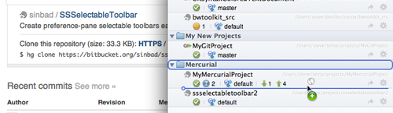
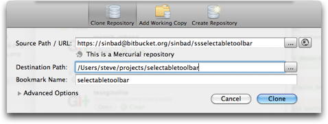

Bookmarks: Cloning a repository
You have a couple of options to clone a repository:
Drag & drop a URL from your browser on to SourceTree

You can drop the new bookmark anywhere in the hierarchy of bookmarks
After this the clone dialog will be shown, as described below.
Use the 'Add Repository' Button
Select where you want to add the new repository, then click 'Add Repository' and select the 'Clone Repository' option.

You can type in / paste an URL or file path into the 'Source' field, or use the disclosure button to browse for it if it's a local clone. SourceTree will validate the source on the fly to tell you if it's a valid clone source (and what type it is).
You should also specify the location to clone to, and what to call the bookmark. You can specify the default parent folder in the Preferences pane.
See also
Bookmarks overview
Adding your existing local source folders
Creating a blank repository
Organising your bookmarks